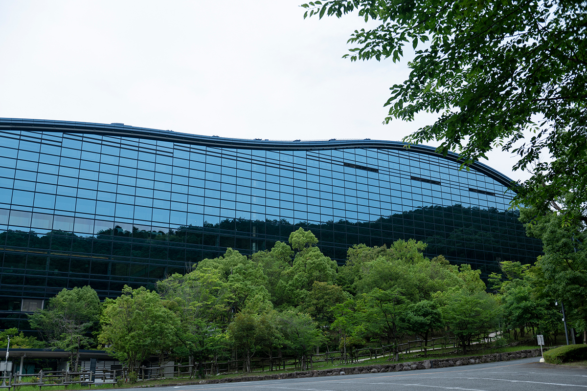
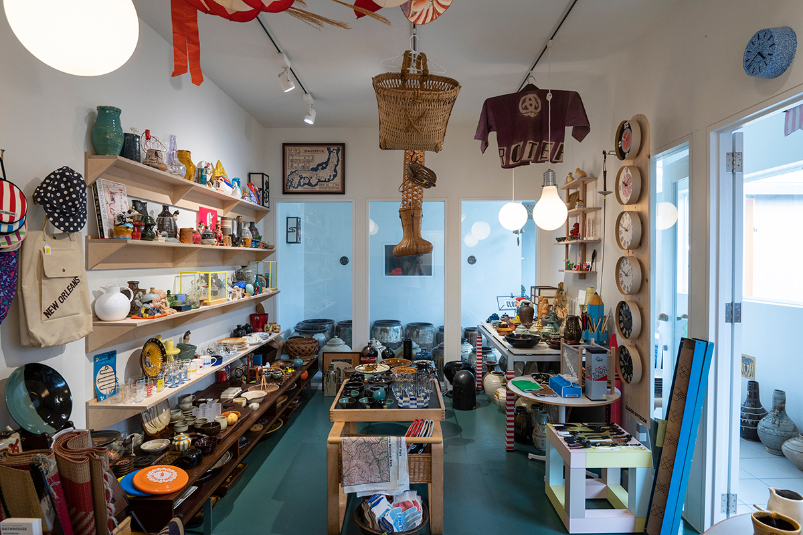
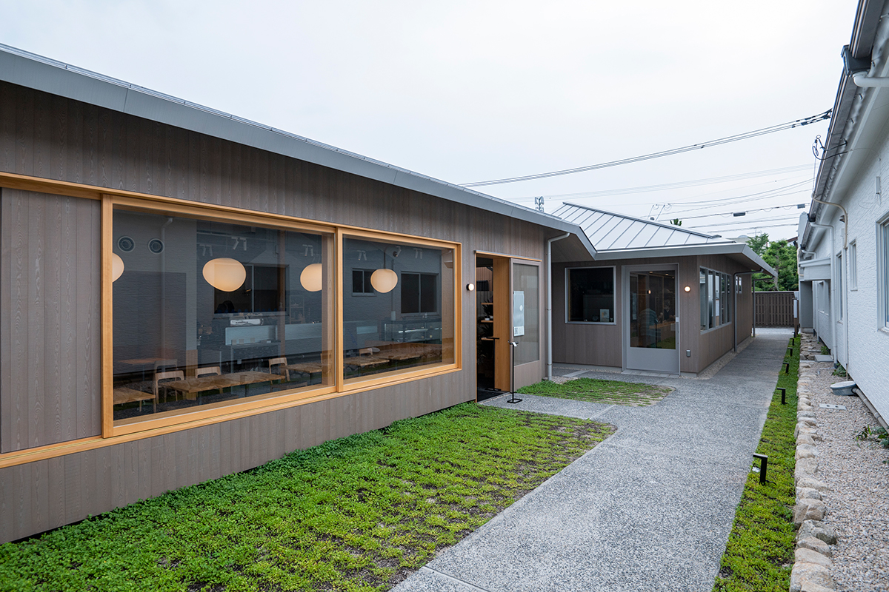

Префектура Фукуока · Дадзайфу · архитектура и дизайн
Дадзайфу для любителей архитектуры: музей Кикутакэ, Starbucks Кэнго Кумы и лавки у святилища

Дадзайфу знают по святилищу Дадзайфу Тэммангу, но тот, кто смотрит на город глазами архитектора или дизайнера, найдёт здесь гораздо больше. На небольшом пятачке у святилища стоят здания двух известных архитекторов, а в переулках прячутся лавки и кафе, ради которых стоит задержаться.
Архитектура
Два знаменитых здания в двухстах метрах
Святилище Дадзайфу Тэммангу давно приглашает на свою территорию современное искусство и архитектуру, и, возможно, поэтому в самом городе тоже хватает мест, на которые интересно смотреть с точки зрения дизайна. Главное из них Национальный музей Кюсю.
Здание спроектировал Киёнори Кикутакэ (1928–2011), один из самых влиятельных японских архитекторов второй половины XX века. По его проектам построены, среди прочего, Музей Эдо-Токио и Художественный музей префектуры Симанэ, а на Югославской биеннале его включили в список «100 архитекторов мира, создавших этот век». Огромная крыша музея изгибается плавной волной и словно растворяется в линии окрестных гор. Внутри открывается светлое пространство высотой в три этажа, и почти полное отсутствие колонн по-настоящему удивляет.
Второе здание известно ещё шире: Starbucks Coffee Dazaifu Tenmangu Omotesando на главной улице, ведущей к святилищу. Его спроектировал Кэнго Кума, и задача была в том, чтобы постройка не нарушала исторический облик улицы перед святилищем. Интерьер собран из деревянных брусков, соединённых без единого гвоздя. Получилось очень фотогенично, и в кофейне всегда много туристов. Городов, где два таких здания стоят в радиусе 200 метров друг от друга, в Японии найдётся немного.
Национальный музей Кюсю
- Адрес
- префектура Фукуока, Дадзайфу, Исидзака, 4-7-2
- Телефон
- +81 50-5542-8600 (справочная служба)
- Часы работы
- 9:30–17:00 (вход до 16:30); в пятницу и субботу во время специальных выставок до 20:00 (вход до 19:30)
- Выходные
- понедельник (если это праздник, то следующий день), конец года
- Сайт
- kyuhaku.jp
Лавка
BATHHOUSE: винтаж и ремёсла
Если смотреть на Дадзайфу с точки зрения дизайна, стоит заглянуть в BATHHOUSE. Это лавка винтажных вещей и ремесленных изделий, которую ведёт человек, много лет проработавший в мире моды. Магазины BATHHOUSE есть также в Токио и Нагое.

Владелец вырос в Токио, а в Дадзайфу поселился по простой причине: его жена родом отсюда, и семья переехала, когда родился первый ребёнок. Город, по его словам, по-настоящему раскрывается только тогда, когда в нём живёшь.
«Я и раньше приезжал сюда несколько раз, но многое понимаешь, только когда живёшь здесь. Для местных святилище Дадзайфу Тэммангу совсем близкое место, скорее что-то вроде собственного сада»
владелец BATHHOUSE
Отдельно он говорит о произведениях искусства на территории святилища.
«Сама идея и то, как это устроено, очень интересны. Мест, где можно запросто посмотреть на работы художников мирового уровня, почти нет»
владелец BATHHOUSE
BATHHOUSE Dazaifu
- Адрес
- префектура Фукуока, Дадзайфу, Сайфу, 2-7-6, здание ALBICOCCA
- Телефон
- +81 92-555-9688
- Часы работы
- 11:00–18:00 (во вторник и среду по предварительной записи)
- Выходные
- четверг, иногда нерегулярно
Квартал
NISHIKIMACHI: пекарня, кафе и суши
Атмосфера города притягивает и других мастеров своего дела. В феврале 2023 года чуть в стороне от главной улицы к святилищу открылся небольшой комплекс NISHIKIMACHI, где поселились пекарь, мастер суши и владелец кафе, для которых главное в работе качество, а не эффект.

В те годы, когда святилище принимало паломников во временном павильоне (2023–2026), город заметно менялся, и NISHIKIMACHI стал одним из знаков этих перемен.
Пекарня Loop a Bread
- Адрес
- префектура Фукуока, Дадзайфу, Сайфу, 2-7-5, комплекс NISHIKIMACHI
- Телефон
- +81 92-408-6034
- Часы работы
- 8:00–17:00, до окончания выпечки
- Выходные
- понедельник, вторник
Кафе tōn
- Адрес
- префектура Фукуока, Дадзайфу, Сайфу, 2-7-5, комплекс NISHIKIMACHI
- Часы работы
- 9:00–18:00 (обед с 11:30, последний заказ в 15:00)
- Выходные
- нерегулярно
«Суши Хирано»
- Адрес
- префектура Фукуока, Дадзайфу, Сайфу, 2-7-5, комплекс NISHIKIMACHI
- Телефон
- +81 92-555-6821 (только по предварительной записи)
- Часы работы
- 12:00–15:00 (последний вход в 13:00), 18:00–21:00 (последний вход в 19:00)
- Выходные
- среда
Хроника
Как Дадзайфу стал городом дизайна
Интерес Дадзайфу к выставкам, музеям и архитектуре появился не вчера. Вот главные вехи.
- 903 год: основано святилище Дадзайфу Тэммангу.
- 1873 год: прошла первая «Выставка Дадзайфу».
- 1893 год: подано прошение о создании музея Тинзэй и получено разрешение. С началом японо-китайской войны план заморозили, и он так и не осуществился.
- 1996 год: Агентство по делам культуры выбрало Дадзайфу местом для нового национального музея.
- Октябрь 2005 года: открылся Национальный музей Кюсю.
- Апрель 2006 года: святилище Дадзайфу Тэммангу запустило свою программу современного искусства.
- Декабрь 2011 года: открылся Starbucks Coffee Dazaifu Tenmangu Omotesando.
- Декабрь 2012 года: завершена перестройка служебного здания святилища Хоман-гу Камадо-дзиндзя.
- Сентябрь 2013 года: после обновления снова открылся туристический информационный центр святилища Дадзайфу Тэммангу.
- Февраль 2023 года: открылся комплекс NISHIKIMACHI.
После прогулки по городу логично завершить день в самом святилище Дадзайфу Тэммангу и в святилище Хоман-гу Камадо-дзиндзя у подножия горы Хоман.
Фото: Хироси Мидзусаки.